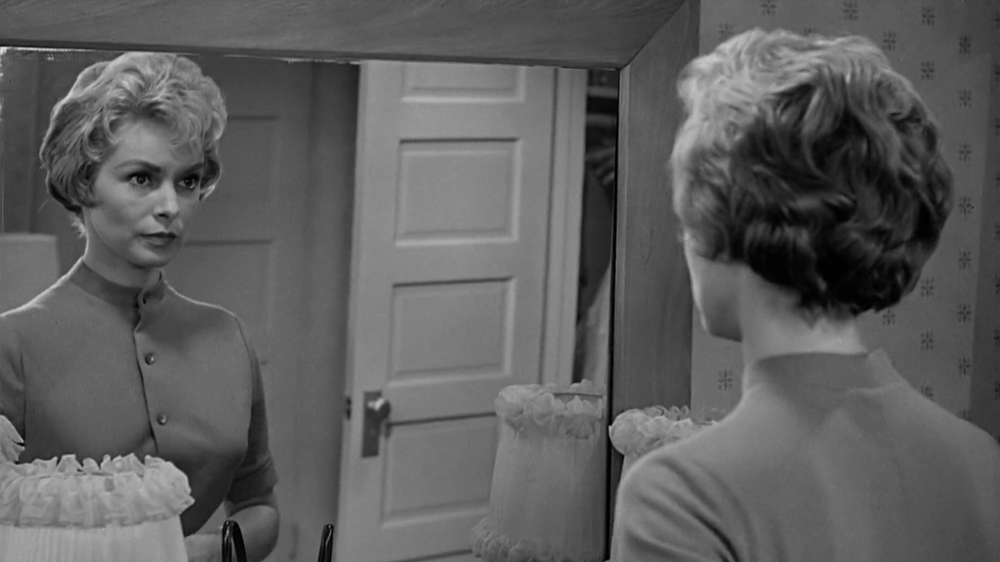

é uma imagem
é clareza
é clareza
é enquadramento
é enquadramento
frame

é tempo

é movimento
pulp fiction
les quatre cents coups
eternal sunshine of the spotless mind
gummo
the shining
pierrot le fou
fear and loathing in las vegas
the truman show

separadores identitários
separadores programáticos
Diana Ferreira, Raquel Simões e Sérgio Ferreira
Universidade de Coimbra, 2016